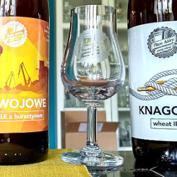
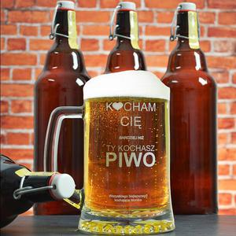
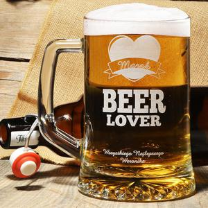
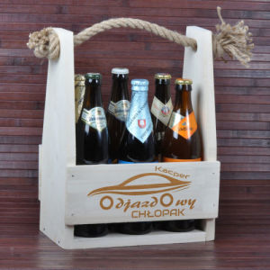

WOSZ
WOSZ
#1
Najdłuższy na świecie kac trwał 4 tygodnie. Wątpliwa przyjemność jego odczuwania spadła na pewnego Szkota, który wypił 60 pint (nieco powyżej 30 litrów) piwa.
#2
W momencie czytania tej ciekawostki prawdopodobnie około 50 milionów ludzi jest pijana. To około 0,7% ludzkości.

#3
Na Międzynarodowych Mistrzostwach w Dźwiganiu żony w Finalndii zwycięzca otrzymuje tyle piwa, ile waży jego małżonka.
#4
Butelka zielona bardziej przepuszcza promienie słoneczne niż brązowa. Dlatego piwo powinno być przechowywane w ciemnym i chłodnym miejscu. Wystawienie piwa na działanie promieni słonecznych sprawia, że jego smak pogorsza się.
#5
Chmiel jest dodawany do piwa w bardzo niewielkich dawkach. Jest on bardzo istotnym składnikiem złocistego trunku, jednak ze względu na intensywność smaku i aromatu, wystarczy zaledwie jedna szyszka chmielu, by uwarzyć półlitrową szklankę piwa.
#6
Drożdże piwowarskie są w stanie wyprodukować piwo o mocy nawet 14% alkoholu. Metodą wymrażania wody z piwa da się zrobić nawet 40 % i więcej.


#7
Wbrew temu co się powszechnie mówi na ten temat, piwo ma relatywnie niewielką wartość kaloryczną. 100g piwa zwiera około 40kcal. To mniej niż większość soków owocowych.
#8
Największą na świecie kadź do piwa zbudowano w 1795r. w Londynie. Mieściło się w niej 860 000 galonów (galon brytyjski to 4,5 litra). W październiku 1814r. na skutek uszkodzenia, wypłynęła rzeka Portera, która zniszczyła okoliczne zabudowania.
#9
Żeby napić się Guinnessa z puszki wykonanej przez zakłady 0'Brien Aluminium dla Guinness Australasia, trzeba się było wspiąć na wysokość 4,27 metra. Wyprodukowana w 1999 roku puszka miała 1,78 m średnicy i ważyła 300 kg.
#10
Największy kufel na świecie: 30 listopada 1985 roku w Kuala Lumpur w Malezjii został zaprezentowany największy kufel do piwa, wyprodukowany przez firmę Selangor Pewter CO. Jego wysokość wyniosła 198,7 cm, a pojemność 2796 litrów.

#11
Piwa nie produkuje się z chmielu tylko z jęczmienia, chmielem się je tylko doprawia.
#12
Lwówek to najstarszy browar w Polsce (Pierwsze piwo uwarzono w 1209 r.), który produkuje piwo według tradycyjnych metod, przy otwartych kadziach, co dziś już jest dużą rzadkością.